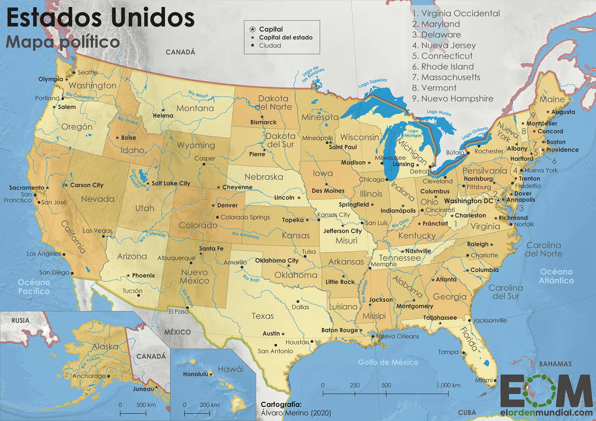

Dos hombres y un destino
Butch Cassidy and the Sundance Kid
Año
1969
Duración
112 min.
País
Estados Unidos

Director
George Roy Hill

Guión
William Goldman

Música
Burt Bacharach

Fotografía
Conrad Hall

Reparto
Robert Redford, Paul Newman,
Katharine Ross, Strother Martin,
Jeff Corey, Henry Jones,
Cloris Leachman, Ted Cassidy,
Kenneth Mars

Productora
20th Century Fox

Género
Western | Crimen. Buddy Film. Amistad. Película de culto
Sinopsis
Un grupo de jóvenes pistoleros se dedica a asaltar los bancos del estado de Wyoming y el tren-correo de la Union Pacific.
El jefe de la banda es el carismático Butch Cassidy (Newman), y Sundance Kid (Redford) es su inseparable compañero.
Un día, después de un atraco, el grupo se disuelve. Será entonces cuando Butch, Sundance y una joven maestra de Denver (Ross)
formen un trío de románticos forajidos que, huyendo de la ley, llegan hasta Bolivia. (FILMAFFINITY)
Premios
1969: 4 Oscars: Mejor guión original, fotografía, canción y bso. 7 nominaciones
1969: Globo de Oro: Mejor banda sonora original. 4 nominaciones
1970: Premios BAFTA: 9 premios incluyendo mejor película, director y actor (Redford)
1969: Sindicato de Directores (DGA): Nominada a Mejor director
1969: Sindicato de Guionistas (WGA): Mejor guión original drama
Críticas
"Newman y Redford, en la plenitud de su carrera (...) Con escenas inolvidables"
Javier Ocaña: Cinemanía
Redford y Newman, tan guapos como irresistibles, hacen tándem por primera vez (cuatro años después rodarían la magistral
"El golpe" -The Sting, 1973-, también a las órdenes de George Roy Hill) en un western formidable lleno de aventuras y con un
ingenioso toque de humor en muchos de sus diálogos. La brillante idea de poner a dos de los mayores sex symbols de la época
para interpretar a los legendarios forajidos "Butch Cassidy" y "Sundance Kid" funcionó a la perfección: el film ganó multitud
de premios y arrasó en las taquillas, quedando en la memoria de varias generaciones la canción "Raindrops Keep Fallin'
on my Head" y la emocionante escena final.
Pablo Kurt: FILMAFFINITY
Tu crítica
Escribe tu opinión para que el resto de los usuarios la pueda leer. Añade tu crítica
Votaciones de almas gemelas
Regístrate y podrás acceder a recomendaciones personalizadas según tus gustos de cine
Votaciones de tus amigos
Regístrate y podrás acceder a todas las votaciones de tus amigos, familiares, etc.
Posición rankings listas
12 Mis westerns favoritos (395)
60 Películas con el poster más bonito de la historia del cine (4)